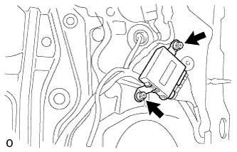
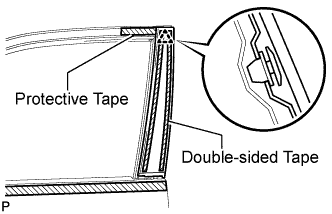
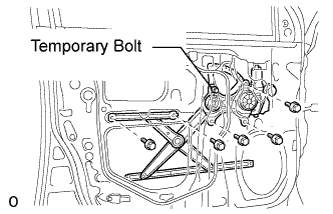
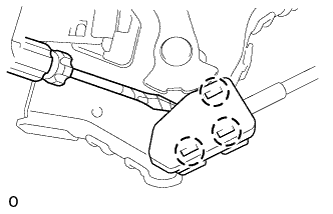
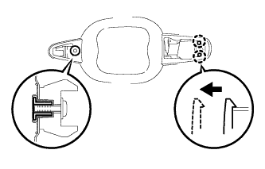
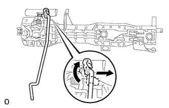
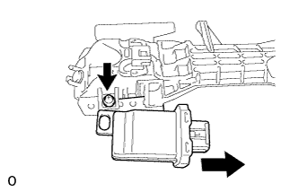
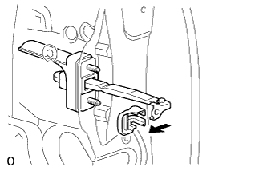
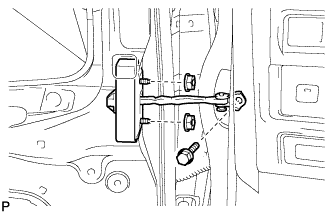

FRONT DOOR > DISASSEMBLY |
| 1. DISCONNECT CABLE FROM NEGATIVE BATTERY TERMINAL |
| 2. REMOVE FRONT LOWER DOOR FRAME BRACKET GARNISH LH |
 |
Detach the clip and claw, remove the front lower door frame bracket garnish.
| 3. REMOVE FRONT DOOR INSIDE HANDLE BEZEL LH |
 |
Using a screwdriver, detach the 4 claws and remove the inside handle bezel.
| 4. REMOVE FRONT DOOR ARMREST BASE PANEL ASSEMBLY LH |
 |
Using a moulding remover, detach the 5 claws.
Disconnect the connector and remove the front door armrest base panel and multiplex network master switch.
| 5. REMOVE MULTIPLEX NETWORK MASTER SWITCH ASSEMBLY |
 |
Remove the 3 screws and multiplex network master switch.
| 6. REMOVE DOOR ASSIST GRIP COVER LH |
 |
Using a moulding remover, detach the 8 claws and remove the door assist grip cover.
| 7. REMOVE FRONT DOOR TRIM BOARD SUB-ASSEMBLY LH |
 |
Remove the 3 screws.
Remove the 13 clips, 4 claws and trim board.
Disconnect the connector.
 |
Disconnect the 2 cables from the inside handle.
| 8. REMOVE COURTESY LIGHT ASSEMBLY (w/ Courtesy Light) |
 |
Detach the claw.
Remove the courtesy light and then disconnect the connector.
| 9. REMOVE SEAT MEMORY SWITCH |
 |
Disconnect the connector.
Remove the screw and seat memory switch.
| 10. REMOVE FRONT DOOR INSIDE HANDLE SUB-ASSEMBLY LH |
 |
Detach the 2 claws and remove the inside handle.
| 11. REMOVE FRONT DOOR INSIDE HANDLE BEZEL LH |
 |
Remove the 5 screws and front door inside handle bezel.
| 12. REMOVE OUTER REAR VIEW MIRROR ASSEMBLY LH |
 |
Disconnect the connector labeled A.
Detach the clamp.
Remove the 3 nuts and claw.
Remove the outer rear view mirror.
| 13. REMOVE OUTER MIRROR CONTROL ECU ASSEMBLY (w/ Retract Mirror) |
 |
Disconnect the 2 connectors.
Remove the 2 screws and outer mirror control ECU.
| 14. REMOVE FRONT DOOR PANEL CUSHION |
 |
Remove the screw and front door panel cushion.
| 15. REMOVE FRONT NO. 1 SPEAKER ASSEMBLY |
Disconnect the speaker connector.
 |
Remove the 4 screws and speaker.
| 16. REMOVE SIDE AIRBAG SENSOR ASSEMBLY LH |
 |
Disconnect the connector.
Remove the bolt and side airbag sensor.
| 17. REMOVE FRONT DOOR SERVICE HOLE COVER LH |
 |
Using a clip remover, detach the 9 clamps.
Remove the bolt and disconnect the 2 connectors.
Remove the service hole cover.
| 18. REMOVE FRONT INNER DOOR GLASS WEATHERSTRIP LH |
 |
Detach the 4 claws by pulling the weatherstrip upward to remove the weatherstrip.
| 19. REMOVE FRONT DOOR GLASS SUB-ASSEMBLY LH |
Driver Side:
Temporarily install the multiplex network master switch.
Passenger Side:
Temporarily install the power window regulator switch assembly.
Connect the cable to the negative (-) battery terminal.
Move the door glass until the bolts appear in the service holes.
Disconnect the cable from the negative (-) battery terminal.
 |
Remove the 2 bolts.
 |
Remove the door glass in the direction indicated by the arrows in the illustration.
Driver Side:
Remove the multiplex network master switch.
Passenger Side:
Remove the power window regulator switch assembly.
| 20. REMOVE FRONT DOOR GLASS RUN LH |
 |
Remove the front door glass run.
| 21. REMOVE FRONT DOOR REAR LOWER FRAME SUB-ASSEMBLY LH |
 |
Remove the bolt and rear lower frame.
| 22. REMOVE LOWER DOOR FRAME GARNISH LH |
 |
Detach the claw and remove the lower door frame garnish.
| 23. REMOVE FRONT DOOR BELT MOULDING SUB-ASSEMBLY LH |
 |
Put protective tape around the belt moulding.
 |
Detach the claw and remove the belt moulding.
| 24. REMOVE FRONT DOOR REAR WINDOW FRAME MOULDING LH |
 |
Put protective tape around the window frame moulding.
Detach the clip and remove the double-sided tape to remove the window frame moulding.
| 25. REMOVE FRONT DOOR WINDOW REGULATOR SUB-ASSEMBLY LH |
 |
Loosen the temporary bolt.
Remove the 5 bolts. and window regulator.
Remove the front door window regulator sub-assembly and the front power window regulator motor assembly as a unit.
Remove the temporary bolt from the front door window regulator sub-assembly.
| 26. REMOVE FRONT POWER WINDOW REGULATOR MOTOR ASSEMBLY LH |
 |
Using a T25 "TORX" driver, remove the 3 screws and motor.
| 27. REMOVE FRONT DOOR OUTSIDE HANDLE COVER LH |
 |
Remove the hole plug.
Using a T30 "TORX" wrench, loosen the screw and remove the cover with the door lock cylinder installed.
 |
Detach the 2 claws and remove the front door outside handle cover.
| 28. REMOVE FRONT DOOR HANDLE ASSEMBLY OUTSIDE LH |
 |
Disconnect the connector.
Using a T30 "TORX" wrench, loosen the screw.
 |
Remove the handle by sliding and pulling it in the direction indicated by the arrow in the illustration.
| 29. REMOVE FRONT DOOR FRONT OUTSIDE HANDLE PAD LH |
 |
Detach the 3 claws and remove the pad.
| 30. REMOVE FRONT DOOR REAR OUTSIDE HANDLE PAD LH |
 |
Detach the 2 claws and remove the pad.
| 31. REMOVE FRONT DOOR LOCK ASSEMBLY LH |
 |
Using a T30 "TORX" wrench, remove the 3 screws.
| 32. REMOVE FRONT DOOR LOCK REMOTE CONTROL CABLE ASSEMBLY LH |
 |
Remove the front door lock remote control cable assembly.
| 33. REMOVE FRONT DOOR INSIDE LOCKING CABLE ASSEMBLY LH |
 |
Using a screwdriver, detach the 3 claws.
 |
Remove the front door inside locking cable assembly.
| 34. REMOVE FRONT DOOR OUTSIDE HANDLE FRAME SUB-ASSEMBLY LH |
 |
Using a T30 "TORX" wrench, loosen the screw.
 |
Detach the 2 claws. Slide the outside handle frame and No. 2 electrical key wire harness to remove it.
Remove the lock open rod from the outside handle frame.
| 35. REMOVE NO. 2 ELECTRICAL KEY WIRE HARNESS |
 |
Disconnect the connector.
Detach the 3 clamps and remove the wire harness from the frame.
| 36. REMOVE FRONT DOOR LOCK OPEN ROD LH |
 |
Remove the front door lock open rod.
| 37. REMOVE DOOR ELECTRICAL KEY OSCILLATOR |
 |
Remove the screw and door electrical key oscillator.
| 38. REMOVE FRONT NO. 2 DOOR STIFFENER CUSHION |
 |
Remove the 2 bolts.
Detach the 2 clamps and door stiffener cushion.
| 39. REMOVE FRONT DOOR CHECK COVER LH |
 |
Remove the cover.
| 40. REMOVE FRONT DOOR CHECK ASSEMBLY LH |
 |
Remove the bolt, 2 nuts and door check.
| 41. REMOVE FRONT DOOR WEATHERSTRIP LH |
 |
Using a clip remover, detach the 21 clips and remove the weatherstrip.